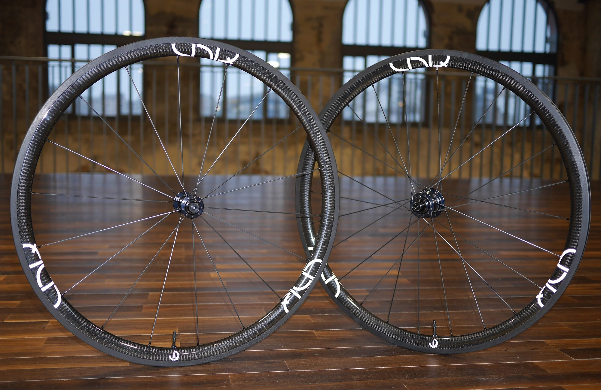

UNIQ For Road
Polyvalentes, Performantes et Uniques

Les roues carbones UNIQ For Road se destinent aux cyclistes recherchant le juste compromis entre performance et robustesse pour toutes les conditions. Freinage efficace sous la pluie, très faible prise au vent, dynamiques, et faciles à lancer sont autant de qualités remontées par les testeurs.
Description
A 1425gr, cette paire de roues de 35mm de haut est particulièrement polyvalente. Elles sont assemblées à la main en Bretagne à Plouzané à partir d’une sélection de composants de haute qualité. Elles sont ainsi composées de moyeux Aivee fabriqués en Vendée, des rayons de référence Sapim CX-Ray et de jantes carbones spécifiées par nos soins.
N'hésitez pas à prendre contact avec nous pour tout renseignement.
Caractéristiques roue avant
| Poids | 620g avec fond de jante tubeless |
| Jante | High TG Toray Carbon Fiber T700 |
| Moyeu | Aivee SR2 |
| Taille | 700c |
| Type de montage | Pneu |
| Compatible tubeless | Oui |
| Hauteur de la jante | 35mm |
| Largeur de la jante | 25.6mm |
| Rayons | Sapim® CX-Ray |
| Nombre de rayons | 18 |
| Type de montage des rayons | Radial |
| Pression maximum des pneumatiques | 8.0bars - 116psi |
| Surface de freinage | Basalt |
| Têtes de rayon | Sapim® secure-lock |
Caractéristiques roue arrière
| Poids | 805g avec fond de jante tubeless |
| Jante | High TG Toray Carbon Fiber T700 |
| Moyeu | Aivee SR2 |
| Taille | 700c |
| Type de montage | Pneu |
| Compatible tubeless | Oui |
| Hauteur de la jante | 35mm |
| Largeur de la jante | 25.6mm |
| Rayons | Sapim® CX-Ray |
| Nombre de rayons | 24 |
| Type de montage des rayons côté opposé RL | Croisés par 2 |
| Type de montage des rayons côté RL | Croisés par 2 |
| Pression maximum des pneumatiques | 8.0bars - 116psi |
| Compatibilité du moyeu | Shimano 10/11v |
| Surface de freinage | Basalt |
| Têtes de rayon | Sapim® secure-lock |
Accessoires fournis
- 4 patins de frein BBB spécifiques
- Paire de valves tubeless
- Fond de jante installé
- Serrages rapides